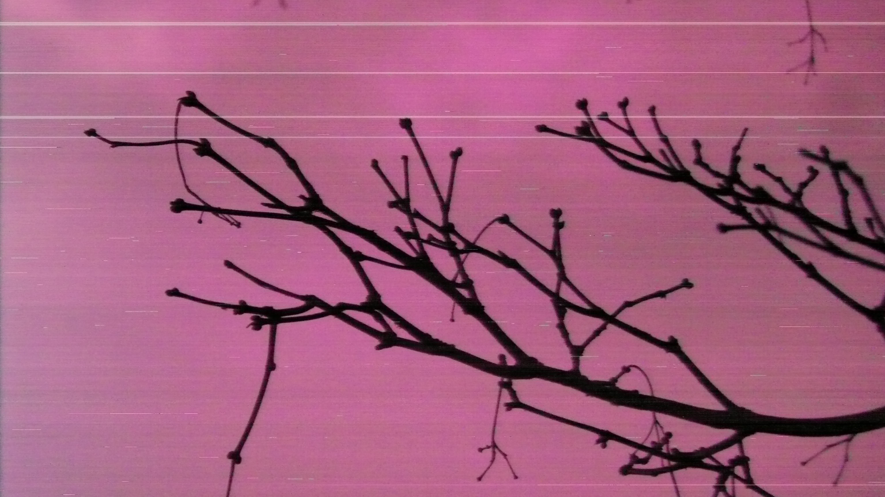
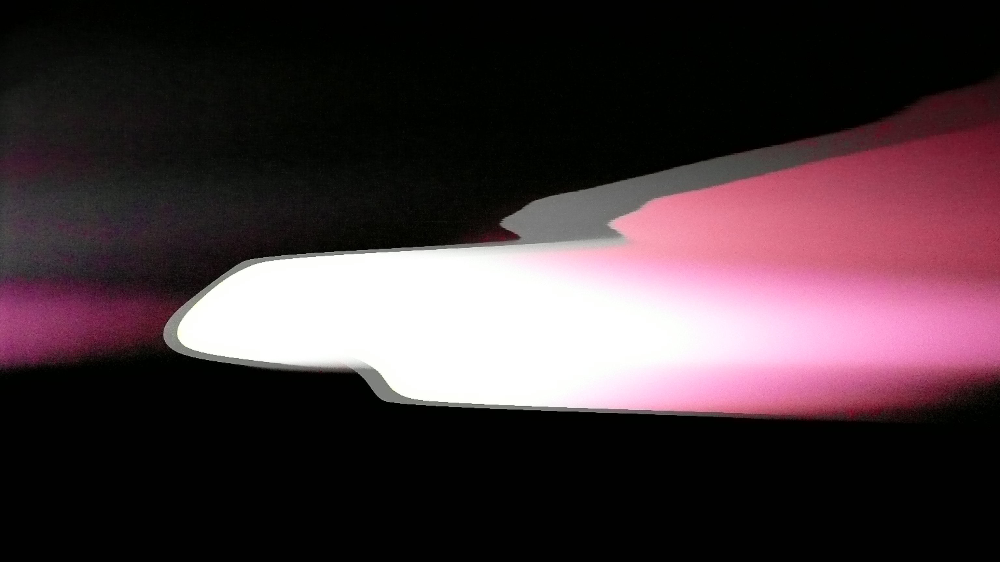
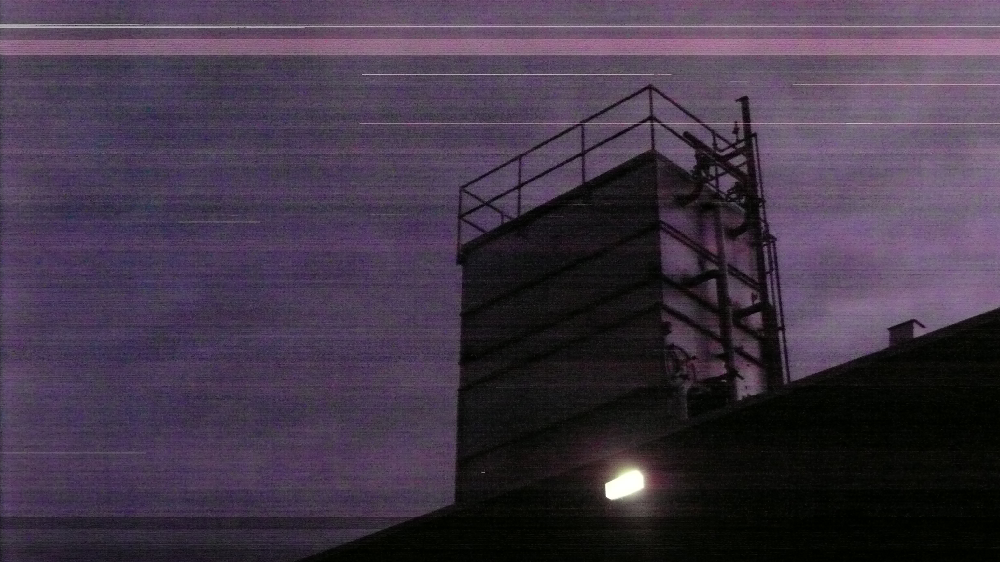
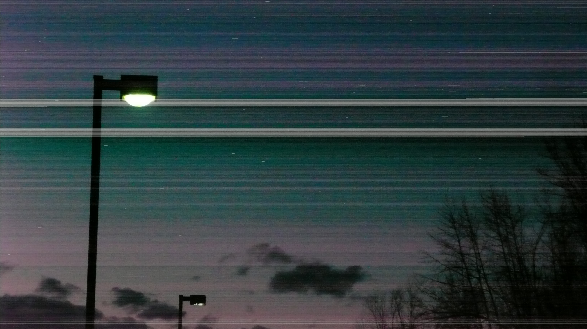
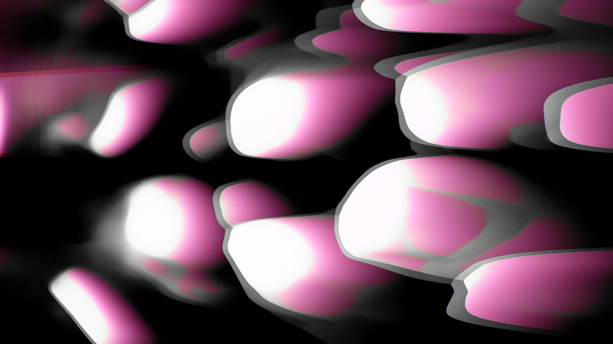
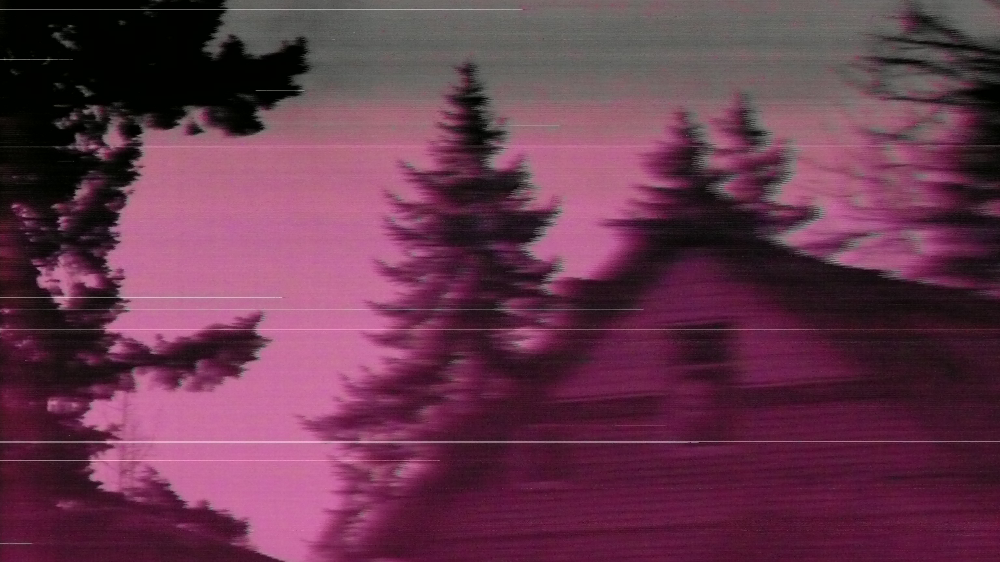
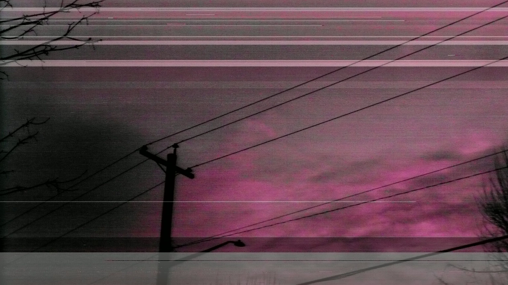
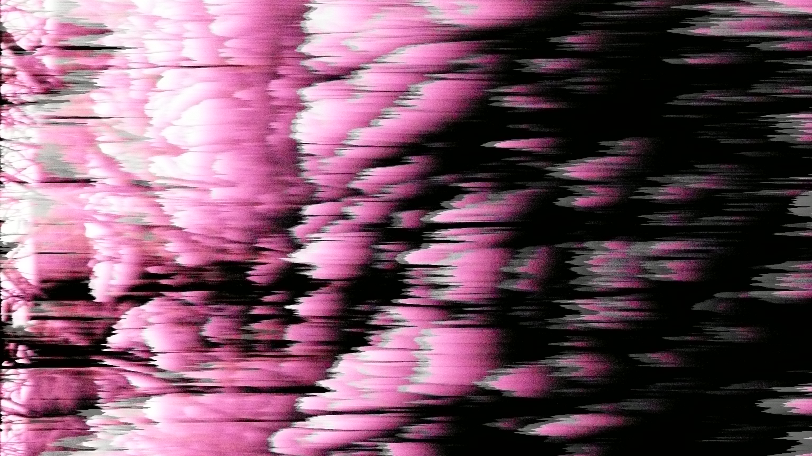

Aberrations in the Aperture is an ongoing photography
project, focusing on distortions & glitches—acting as a sort
of “corrupted file” of my life. All photographs shown here are
unedited (apart from occasional cropping) & captured with
a damaged Panasonic Lumix DMC-TZ2. How the camera
came to be this way is still a mystery, but the appearance of the
photographs has something to do with the CCD sensor being
busted.
The focus of these images is on various locations & objects
relevant to my life, alongside my own artworks. Each photograph
becomes distorted in its own different way—sometimes they are
pink & totally illegible, other times they seem to be overwhelmed
by lines & static, & other times still they become almost fully
black & white.
These photographs create a bridge between my work, as the
photographer, & the camera itself; though I fully dictate what the
photos are of, it's entirely up to the camera to decide if future
viewers will be able to make any sense of what was captured.
This project manifests itself in a curated set of what I personally
find to be the most interesting photographs.







